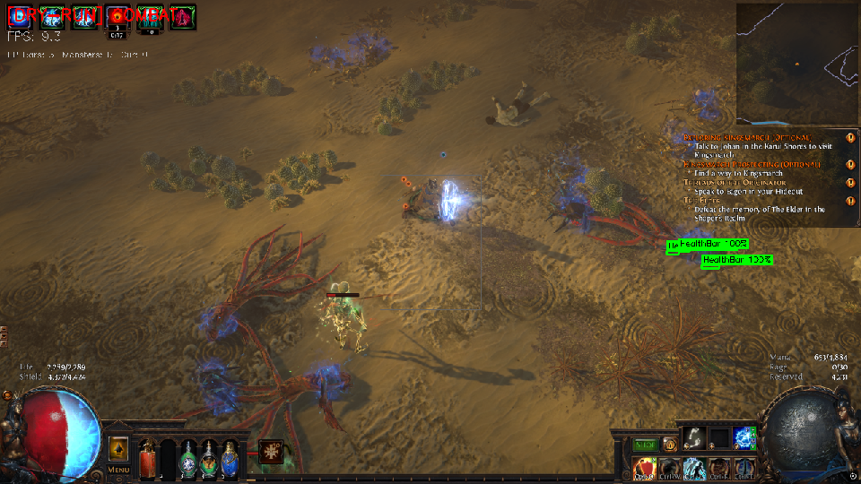

What Worked
Detection became good enough to drive real gameplay decisions
Once navigation was stable, the next step was teaching the project how to understand what was happening on screen. That meant moving from minimap structure into object-level detection: monsters to attack, currency to pick up, and interactables such as portals that should be recognized instead of confused for combat targets.
The current detection stack is built around YOLO11n, trained for a narrow set of Path of Exile classes and then wrapped in a lightweight inference layer. In practice, this gave the project a surprisingly usable combat and loot signal. Most of the time, enemies and currency were picked up well enough for the controller to make immediate decisions about whether to fight, loot, or keep navigating.

What Still Breaks
False positives and edge cases still exist
Even with a stronger detector, the system is not perfect. One of the more persistent issues is false positives around UI-adjacent elements and health-bar-like shapes. In difficult scenes, the model or fallback logic can still latch onto things that look structured enough to matter but do not actually represent a valid combat target.
That is why the final implementation does not trust raw detections alone. Detection quality is high enough to be useful, but still noisy enough that it needs filtering, thresholds, deadzones, and fallback logic to stay reliable inside the full bot loop.

Implementation
The detector is only one part of the system
The implementation is split across a few layers. ml/detect.py wraps the trained YOLO model and converts its raw predictions into a smaller set of classes the rest of the project cares about. combat_loop.py then turns those detections into action: monsters become combat targets, currency becomes loot targets, and the controller decides whether navigation should pause while combat or pickup happens.
The other important tool in the stack is the health-bar detector. It acts as a stronger short-range combat signal in cases where raw object detection is less stable. That mix of learned detection plus rule-based filtering ended up being much more reliable than relying on only one source of truth.
The snippets below show the practical structure of the implementation: first the model wrapper that narrows the classes and filters detections, then the controller logic that decides how those detections get used in combat and loot behavior.
results = self.model.predict(
frame,
conf=conf or self.conf,
device=self.device,
verbose=False,
half=(str(self.device) != 'cpu'),
augment=False,
agnostic_nms=False,
classes=[0, 2, 3]
)
for box in r.boxes:
cls_id = int(box.cls[0])
cls_name = self.names[cls_id]
x1, y1, x2, y2 = [int(v) for v in box.xyxy[0]]This first layer keeps the runtime focused on only the classes the project actually needs: monsters, portals, and currency. That sounds small, but reducing the output space matters because it lowers noise and makes every later decision simpler.
if filter_player_center and cls_name == "Monster":
box_cx = (x1 + x2) / 2
box_cy = (y1 + y2) / 2
if abs(box_cx - center_x) < (deadzone_x / 2) and \
abs(box_cy - center_y) < (deadzone_y / 2):
continueThis is one of the simple but important protections in the pipeline. A lot of bad detections become much less harmful if the center of the screen is treated as a deadzone, because that area is dominated by the player and nearby effects.
monsters = [d for d in hp_bars if not is_in_player_deadzone(d)]
if not monsters:
monsters = [d for d in detections
if d["class"] == "Monster"
and d["conf"] >= MONSTER_CONF_THRESH
and not is_in_player_deadzone(d)]
currency = [d for d in detections
if d["class"] == "cur"
and d["conf"] >= CURRENCY_CONF_THRESH]This final layer is where the detector becomes useful behavior. Health bars get first priority for active combat, YOLO monster detections act as a fallback when those bars are not present, and currency gets handled separately as a looting signal. The result is less like a single detector and more like a small decision stack built around multiple visual cues.